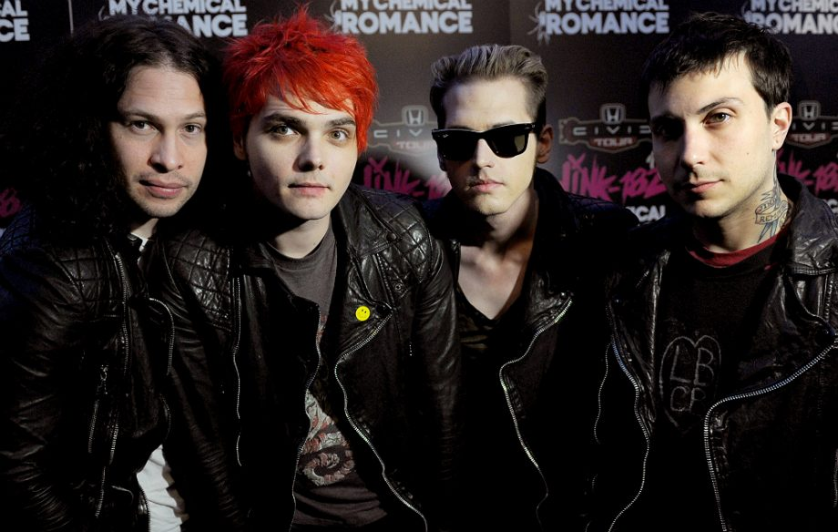

- Early career (2001–2002)
- Major label signing and Three Cheers for Sweet Revenge (2003–2006)
- The Black Parade (2006–2009)
- Danger Days: The True Lives of the Fabulous Killjoys (2009–2011)
- May Death Never Stop You and post-break-up (2014–present)(2011–2013)

- 1996–2000: Early years
- 2000–2002: Hybrid Theory and Reanimation
- 2002–2004: Meteora
- 2004–2006: Side projects
- 2006–2008: Minutes to Midnight
- 2008–2011: A Thousand Suns
- 2011–2013: Living Things and Recharged
- 2013–2015: The Hunting Party
- 2015–present: One More Light and Bennington's death